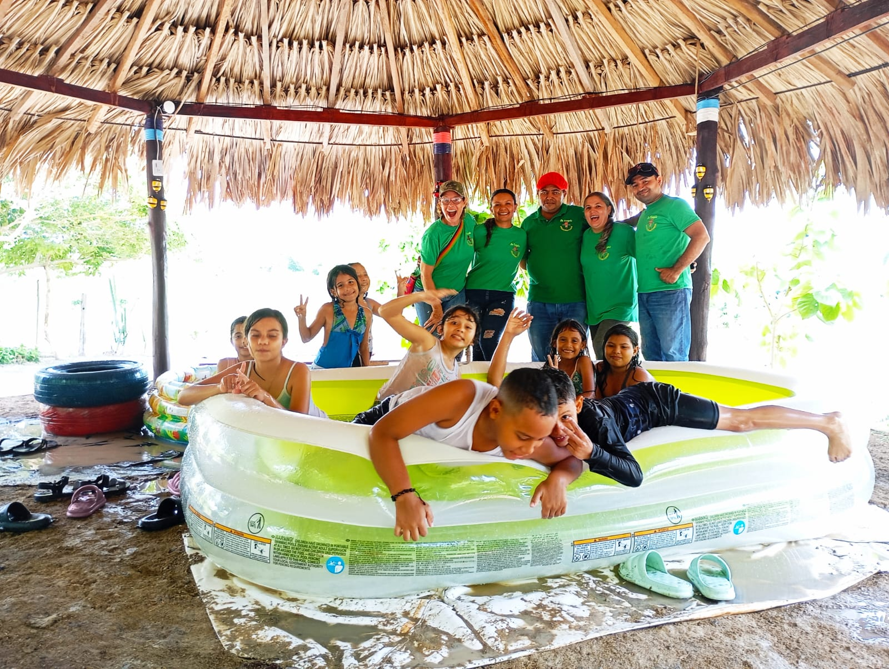

Memorias de LaRosita-ECO
Revive los mejores momentos de nuestras ediciones anteriores. Cada imagen cuenta una historia de aprendizaje, diversión y conexión con la naturaleza.

Aprendizaje al aire libre: momentos de encuentro con la naturaleza.

Reciclaje creativo: transforma materiales usados en experiencias nuevas.

Exploración ambiental: caminatas y descubrimientos en equipo.

Aventura ecológica: actividades al aire libre con mucho entusiasmo.

Campamento ecológico: convivencia y aprendizaje en contacto con la
naturaleza.

Manualidades verdes: creatividad con materiales naturales.

Diversión en equipo: juegos diseñados para aprender.

Cocina al aire libre: sabores y valores sostenibles.
Experiencias vividas
Un recorrido por la historia de nuestros campamentos eco-recreativos. Experiencias inolvidables que dejaron huella en cada participante y nos impulsan a seguir creciendo.

Momentos maravillosos.

Conectando con nuestras raíces y recordando nuestros inicios.

Proyectos creativos que inspiraron a muchos en el pasado.

Nuestra historia: superando nuevas aventuras y retos cada año.

Diversión atemporal: risas y juegos que nunca se olvidan.

Grandes expediciones guiadas desde nuestras primeras ediciones.

Semillas de conciencia ambiental plantadas años atrás.
Lo que dicen las familias
"Mi hijo regresó feliz y ahora cuida el jardín con mucho entusiasmo. Excelente experiencia."— Laura G.
"Profesores con gran paciencia y actividades muy bien organizadas. Totalmente recomendable."— José M.
"Vimos un avance grande en responsabilidad ambiental en solo una semana. Muy buen ambiente."— Karla R.